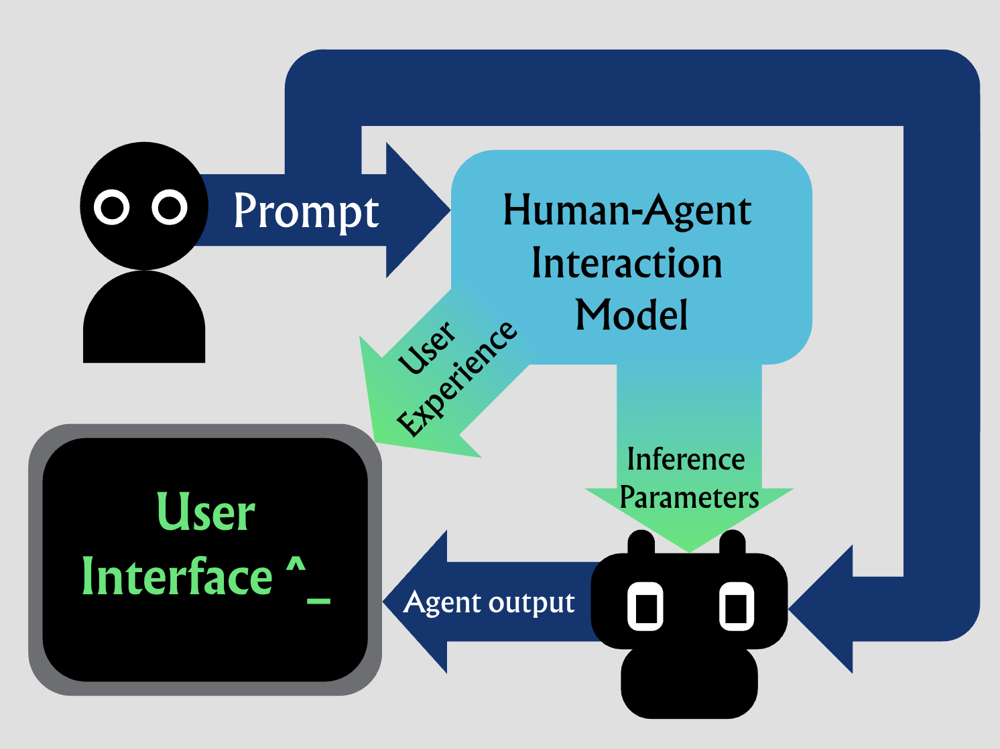

We are going to optimize the inference speeds (and possibly other settings like frequency of human querying) of multiple agents working in parallel while periodically querying a human(s) for input to minimize both total time and cost. We start with an MVP of a single human looking over two agents with real-time prediction of response lengths and human input time to determine inference speeds.

Background
A viral study by Anthropic claims that Anthropic employees spend most of their time “babysitting” multiple agents working in parallel and that “human attention is a constant bottleneck.” As running multiple parallel agents becomes more popular, and models become more powerful, we are preparing for this future by studying how to optimize multiple agents so that the human in the loop spends less time idle.
MVP Assumptions
- 1 human
- 2 agents
- Only one kind of model, so same performance for all agents
- Token speed is deterministic (assumes no speculative decoding for now)
- Token speed can be adjusted continuously to any speed and has a simple function from speed to price
- We can switch between speeds with no overhead
- All tasks are coding-related
- Parallel agents are working on independent tasks that have no relation
- A human can only be answering one question at a time and cannot have their attention swapped to something else
- We know how many tokens a given LLM response will take using a predictor, and we predict how long human input will take
We optimize for minimizing the total cost for the entire run, and the total time until all tasks done by parallel agents are done, given how much time is valued at ($/hour).
Goals and Deliverables
PLAN TO ACHIEVE
A tool that regulates inference speed, while optimizing for total cost and time until a given set of tasks is completed.
This tool will be tested against an emulation of agent use, based on traces of an agent run (on a coding task) that has already been completed. It will dynamically adjust inference speed throughout the run.
HOPE TO ACHIEVE
An interface for efficient (in terms of cost and time for completion of a given task) parallel agent use that is informed by human-agent interactions.
Most ambitiously we want to handle any of the following: more than 2 agents, a probability distribution for the prediction of response length / human input time, and generally taking into account the human factors of how humans interact with agents.
Schedule
-
11/9/2026
- Most bare-bones MVP of running synthetic traces with a priori agent token number and human response time
- Collect agent use traces in bulk and build the agent use emulator
-
11/16/2026
MVP- Working tool (for both synthetic and real agent runs) that adjusts inference speed based on model
- Incremental feature to tool that does the above and adjusts some other inference/interface or protocol parameter (eg frequency of follow-up questions, extent of monitorability of agent activity)
-
11/23/2026
Milestone- Building an agent-human interaction model, which may include
- Prediction of LLM response length
- Prediction of human thinking time
- Learned model targeting cost and time efficiency
- Instead of each agent being given a task to begin with, making a system that is making decisions on splitting and assigning subtasks of a main task
- Building an agent-human interaction model, which may include
-
11/30/2026
- Adjust which model we are using as well (more or less powerful models) since less powerful models are faster as well
-
12/7 – 12/11
- Preparing live demo / presentation